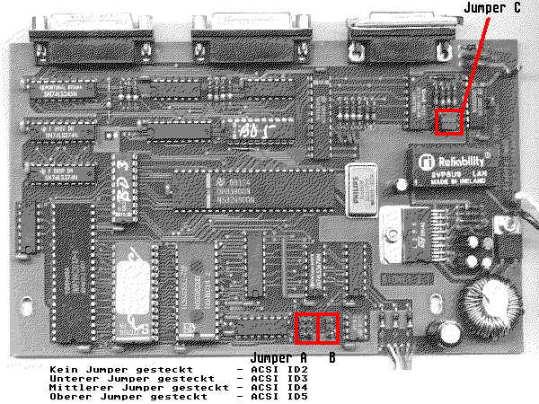

Previous
Next
TOC
Die Platinenabbbildung der V2.1

Die Platine liegt so vor mir, daß die drei Leds zu mir zeigen und
alle Stecker/Buchsen von mir weg.
Der DMA-Knoten funktioniert entweder an der BNC-Buchse, oder am
AUI-
Anschluß. Um die Betriebsart zu ändern muß man Jumper ändern UND
einen Baustein ein- beziehungsweise ausbauen.
Für BNC-Buchse:
Das Jumperfeld (Jumper C) oben rechts muß wie folgt gesetzt sein:
*-*
*-* *
Direkt rechts daneben muß ein Baustein (16Pol) eingebaut sein.
Oft steht drauf:
bel 9123
A553-1006-AB
Für
AUI Betrieb:
Die beiden Jumper (JP2) abziehen und einen Pin nach rechts versetzt
wieder aufstecken (sodaß der der obere rechts frei in der Luft
hängt).
Autoboot:
Unten (ganz am Rand) ist ein Jumperfeld (JP1) mit drei Jumpern über-
einander. Ist der untere nicht gesteckt, ist der Adapter autoboot-
fähig. Dann kommt immer eine Meldung wenn nicht die original Bionet
Software samt deren Server Software verwendet wird.
weiterblättern
Kapitel Das Bionet 100 Netzwerk, Seite 3